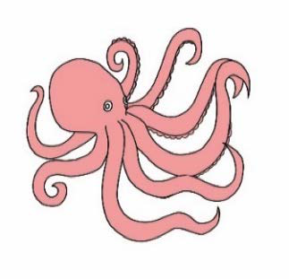
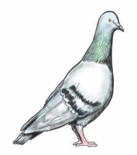
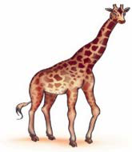

Sura ya Tano
Kusoma herufi mwambatano bw, gw, pw, sw, tw, nj na nz
Kutambua herufi mwambatano bw, gw, pw, sw, tw, nj na nz
1.Tazama/ chunguza picha hizi, kisha taja majina yake:

(a)

(b)

(c)

(d)

(e)

(f)
2.Taja maneno yanayoundwa kwa herufi mwambatano bw, gw, pw, sw, tw, nj na nz.
32